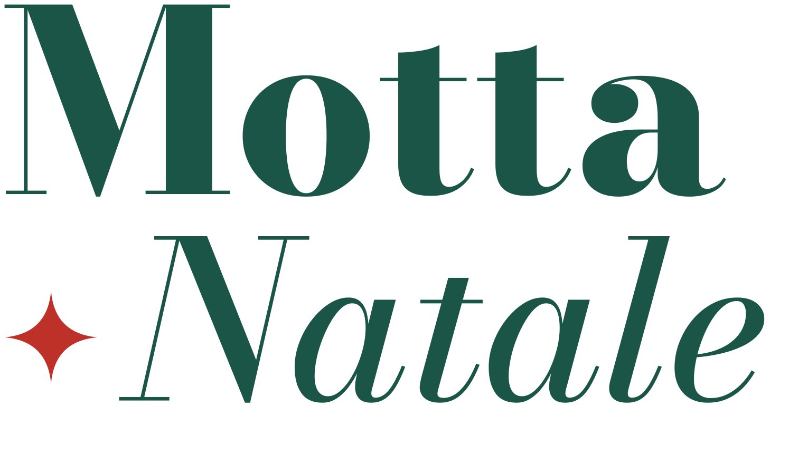

Il mosaico
Due famiglie di quadrati sullo stesso passo (135px nei post, 120px nelle storie): le caselle con il numero dei giorni di attività e le tessere con una figura piatta. Si accostano senza spazio.
Il marchio
"Motta" in Bodoni Moda ExtraBold e sotto "✦ Natale" in corsivo: la stella prende il posto della "a" e si legge Motta a Natale. La stella è il simbolo della campagna. Il marchio sta in alto a sinistra, largo 190px, sempre su un fondo pieno e mai sopra una foto. Quattro versioni, una per fondo, in design-system/marchio/.
 panna-ocra · su verde-loggia
panna-ocra · su verde-loggia
panna · su rosso
verde · su rosa e azzurro verde-rosso · su panna
verde-rosso · su pannaLa casella del giorno
Solo i giorni con un'attività hanno una casella. Ogni giorno ha un colore fisso, uguale in tutti i post, e mai uguale al fondo del post.
CasellaNel programma: numero grande, giorno della settimana sopra.
ApertaNel post e nella storia dell'evento la casella si apre ad arco.
L'albero
L'unica illustrazione grande della campagna, per l'annuncio e gli auguri. File in design-system/illustrazioni/albero.svg.
Le 18 tessere
File SVG in design-system/tessere/, da caricare su Canva. Fondo e figura sono fissi. Si usano con parsimonia: una sola per post, nell'angolo, salvo la caccia a Zenzerino e le copertine. Le tessere di Motta sono portici, cupola (la Loggia), campanile (il Duomo) e onda (la Livenza).
Colori
#1A5548 · fondo
#BD3128 · fondo
#F3B2C1 · fondo
#86B6DE · fondo
#E8A63A · caselle
#F4ECDC · caselle e archi
#2E9C8E · caselle, tessera cupola
#2B2019 · testi
Caratteri
5 · 12 · 24 · 31
Luci accese, pista aperta
Eventi e intrattenimento per tutta la famiglia.
Sabato 5 dicembre · [luogo]
Musica, pattinaggio gratuito, Babbo Natale e il presepe in piazza.